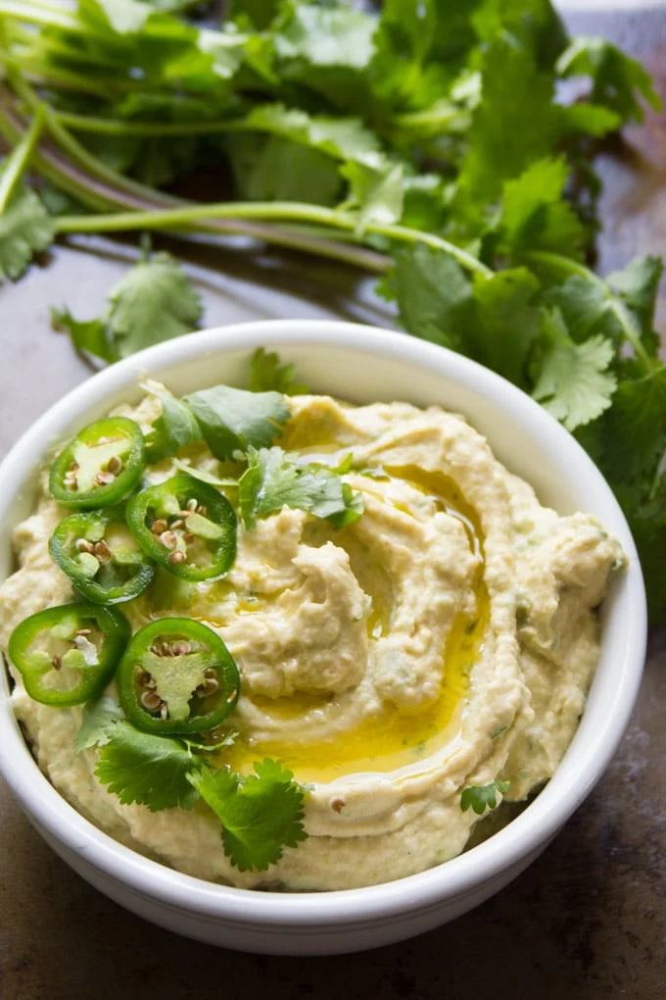

Jalapeno Hummus

Description
Prep: 10 mins Total: 10 mins Servings: 8 Yield: 8 servings
A spicy hummus to liven up the appetizer table!
Ingredients
- 1 cup garbanzo beans
- ⅓ cup canned jalapeno pepper slices, juice reserved
- 3 tablespoons tahini
- 3 cloves garlic, minced
- 2 tablespoons lemon juice
- ½ teaspoon ground cumin
- ½ teaspoon curry powder
- crushed red pepper to taste
Steps
- in a blender or food processor, mix the garbanzo beans, jalapeno peppers and reserved juice, tahini, garlic,
and lemon juice.
- Season with cumin, curry powder, and crushed red pepper.
- Blend until smooth.
Nutrition Facts
Per Serving: 75 calories; protein 2.6g; carbohydrates 9.1g; fat 3.5g; sodium 191.4mg.
Back to home